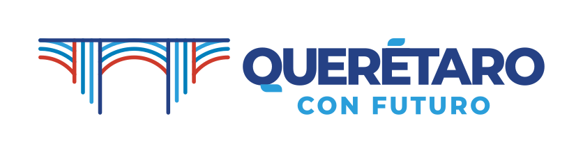
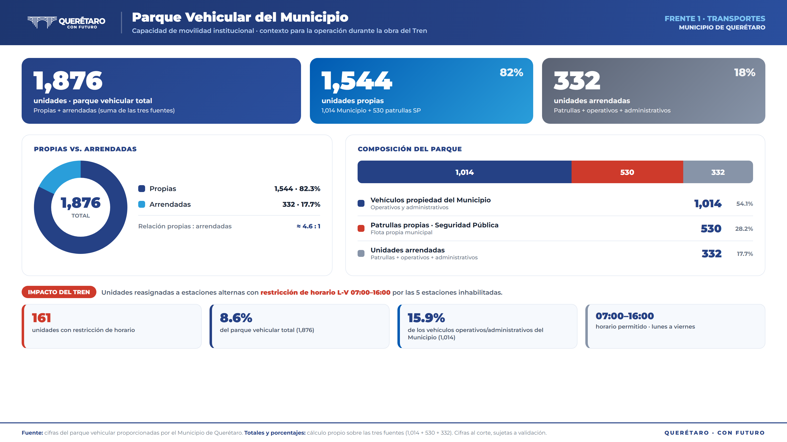
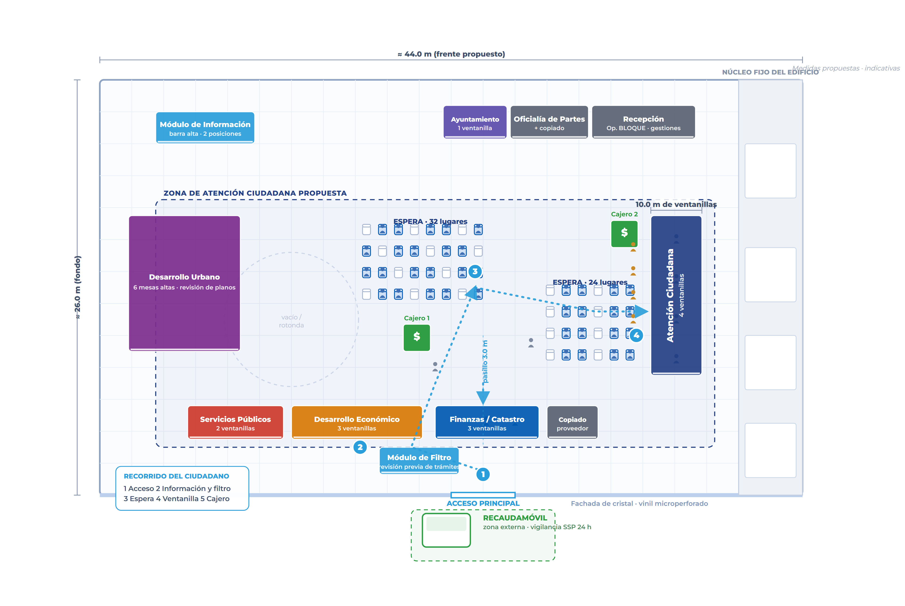
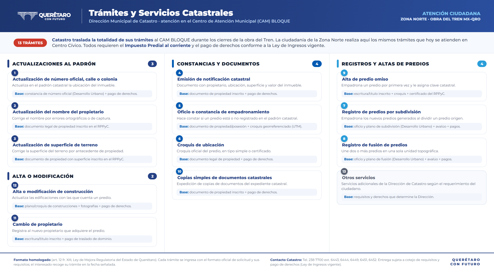
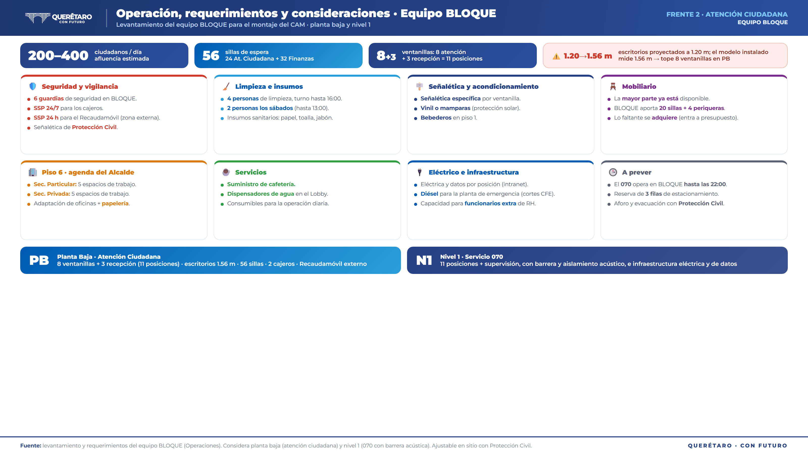
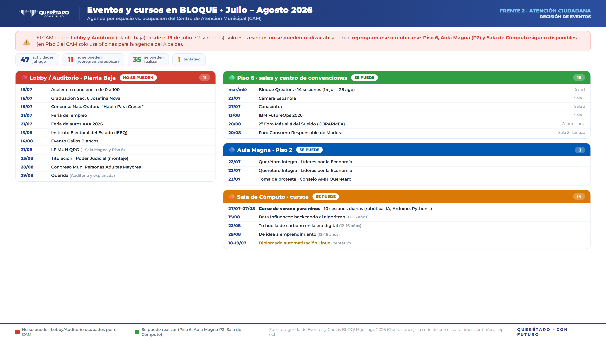
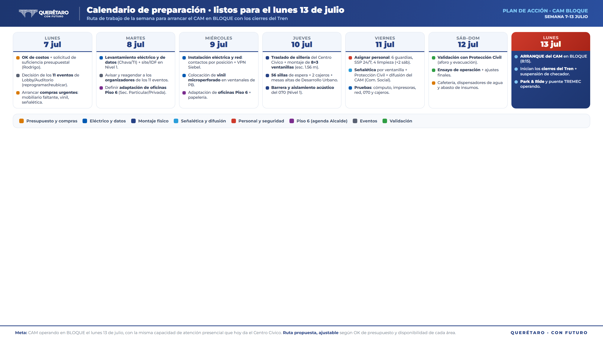

Plan de Acción
Tren México–Querétaro
No es reubicar oficinas: es un modelo inteligente de atención ciudadana en BLOQUE, con innovación, movilidad y eficiencia, ante los cierres de la obra federal sobre Blvd. Bernardo Quintana.
Tres frentes de acción
TREN MX–QRO
Transporte y combustible
5 estaciones de carga inhabilitadas por la obra. Reasignación de 161 unidades del parque vehicular a estaciones alternas con horario restringido.
Modelo de atención ciudadana
BLOQUE como Centro de Atención Zona Norte rediseñado con criterios de innovación: ventanillas priorizadas, toma de turnos, flujos claros y medición de tiempos.
VPN y home office
Dotar de VPN a las laptops del Municipio para que el personal opere en casa durante los cierres y no dependa del traslado a oficinas.

Mapa interactivo del corredor
Trazo real de las vías (OpenStreetMap), estaciones del tren y zona de obra. Se puede acercar y hacer clic en cada punto durante la reunión.
Estaciones de combustible inhabilitadas
TRANSPORTES

5 estaciones inhabilitadas
- Carretas
- Los Arcos
- Arquitos
- Parques
- Universidad
Reasignación de estaciones
TRANSPORTES
| Unidades | Estación de servicio con restricción de horario | Estación inhabilitada que sustituye |
|---|---|---|
| 11 | Milenio, La Nación, La República, Pasteur, 5 de Febrero y Corregidora | Carretas |
| 6 | Tlacote | — |
| 13 | La Luz, Central de Abastos, Centro Histórico, Magno, El Sol, San Pablo, Carrillo, Zenalva, Antea y Bellavista | Arcos, Arquitos y Parques |
| 64 | Centro Sur | — |
| 5 | Junípero y Tecnológico | Universidad |
| 23 | Tláloc | — |
| 39 | Ensueño | — |
| 161 | Total de unidades administrativas reasignadas |
Parque vehicular por dependencia
TRANSPORTES
22 dependencias con restricción de horario

Acceso y movilidad al Centro de Atención
ATENCIÓN CIUDADANA
Ruta ciudadana
- Paradas AMEQ 1–4 sobre la Av. Lateral
- Acceso a BLOQUE por la calle de la llantera Michelin
- Puente peatonal TREMEC sobre Av. 5 de Febrero (ambos sentidos)
- Punto 5 = ingreso al Centro de Atención
Logística operativa · CAM BLOQUE
ATENCIÓN CIUDADANA
Espacio y flujo
- Ocupar planta baja; solo de ser necesario otros pisos (p. ej. CAT 070).
- Reservar las 3 filas de estacionamiento cercanas al acceso para la ciudadanía (no empleados).
- Módulo de filtro y toma de turno previo al ingreso de trámites.
Montaje y equipo
- Traslado de sillería, mobiliario y equipo de Centro Cívico a BLOQUE (apoyo de todas las áreas).
- Cada área aporta el cómputo, impresoras, escáner y teléfonos que necesite; se proveen los mínimos.
- Instalación eléctrica y de red según espacios; mobiliario con Control Patrimonial.
- Recubrimiento de ventanales de planta baja con vinil microperforado (por la entrada de luz).
- Difusión y señalética permanente del CAM (horarios, trámites y servicios) con Comunicación Social.
- Señalética e identificación de cada módulo/ventanilla del Lobby (guía visual para la ciudadanía).
Acomodo de ventanillas · equipo BLOQUE
ATENCIÓN CIUDADANA

Escanea para recorrer el lobby real de BLOQUE

Ventanillas y equipo por secretaría
ATENCIÓN CIUDADANA
| Área en el Lobby | Espacios de atención | Equipo requerido por posición | Equipo |
|---|---|---|---|
| Atención Ciudadana | Módulo de información · 2 ventanillas de ingreso · 1 de respuestas · 1 de promotores · módulo de filtro · 2 cajeros inteligentes · 070 (10 pos.) · supervisión | Cómputo, impresoras, escáneres y teléfonos por posición · 2 cajeros · 10 líneas 070 | Sí |
| Finanzas | 1 ventanilla gestiones internas · 2 ventanillas de Catastro · unidad móvil de cajeros | 3 computadoras, 3 impresoras, teléfono · toma eléctrica para unidad móvil | Sí |
| Desarrollo Urbano | 6 espacios de análisis técnico (mesas altas para planos) | 6 computadoras, red, VPN Siebel, multifuncional, escáner, teléfono | Solo cómputo |
| Servicios Públicos | 2 ventanillas (residuos · poda y derribo) | 2 computadoras con intranet/internet/SIM, 2 impresoras, teléfono | No |
| Desarrollo Económico | 3 ventanillas (apertura, renovación y baja de licencias) | 3 computadoras con red del municipio, 3 impresoras, 3 escáneres, teléfono | No |
| Ayuntamiento | 1 ventanilla (constancias de residencia) | 1 computadora con intranet/internet/SIM, 1 impresora, teléfono | No |
| Oficialía de Partes | 1 módulo de recepción y sellado de documentos · copiado | Computadora, impresora/copiadora, sello y teléfono | A definir |
| Recepción de Presidencia | 1 módulo de recepción y canalización de la ciudadanía | Computadora, teléfono y directorio de canalización | A definir |
Prioridad de instalación · semáforo de ventanillas
ATENCIÓN CIUDADANA
- Información, filtro y toma de turnoPrimer contacto, ordena todo el flujo
- Atención Ciudadana: ingreso y respuestasMayor volumen diario
- Finanzas y CatastroPagos y plazos, alta sensibilidad
- Cajeros inteligentes (2)Recaudación, descargan ventanillas
- 070 · atención telefónicaServicio continuo, no puede parar
- Desarrollo Urbano (6 mesas técnicas)Requiere VPN Siebel y red
- Desarrollo Económico (licencias)Flujo medio, trámite programable
- Servicios Públicos (residuos, poda)Canalizable por App Ciudad
- PromotoresApoyo, no bloquea la atención
- Ayuntamiento (constancias)Bajo volumen
- Oficialía de Partes y copiadoServicio de soporte
- SupervisiónPuede ir en otro nivel
- Digitalización asistida / piloto en líneaReduce filas a mediano plazo
Diseño operativo del montaje · planta baja
ATENCIÓN CIUDADANA
1Espacio y capacidad
2Infraestructura
3Flujo y experiencia
4Capacidad operativa
Requerimientos: mobiliario, equipo, eléctrico y personal
ATENCIÓN CIUDADANA
- 15 escritorios / módulos de ventanilla
- 15 sillas de empleado + 15 de ciudadano
- Barra alta de información + 2 sillas altas
- 6 mesas altas (Desarrollo Urbano) + sillas
- 56 sillas de espera (24+32) + unifilas
- Señalética y directorio de módulos
- Cómputo, impresora, escáner y teléfono por posición
- 2 cajeros inteligentes + 1 unidad móvil
- 10 líneas 070
- Toma de turnos + pantalla de turnos
- Multifuncional y escáner (Desarrollo Urbano)
- Contactos eléctricos por cada posición
- Toma eléctrica para la unidad móvil
- Red / internet e intranet municipal
- VPN Siebel para Desarrollo Urbano
- Capacidad para ~15 ventanillas + 070 + cajeros
- 1 operador por ventanilla (15)
- Información (2) + filtro (1)
- 10 posiciones 070 + supervisión
- Estimado ~29 personas por turno
- A confirmar con cada área y RRHH
Áreas que requieren dotación de equipo
Servicios Públicos, Desarrollo Económico, Ayuntamiento y Oficialía de Partes no cuentan con equipo; Desarrollo Urbano solo tiene cómputo. El resto ya cuenta con lo suyo.

Insumos generales de papelería
ATENCIÓN CIUDADANA
- Hojas bond carta y oficio
- Tóner y cartuchos por equipo
- Papel para toma de turnos
- Sobres y folders
- Plumas, lápices y marcadores
- Engrapadoras y grapas
- Clips, notas adhesivas, cinta
- Perforadoras y tijeras
- Carpetas y separadores
- Sellos y cojines de tinta
- Formatos preimpresos por área
- Charolas de documentos
- Insumos sanitarios (papel, toalla, jabón)
- Gel y sanitizante en módulos
- Garrafones / agua para dispensadores
- Bolsas y consumibles de limpieza

VPN y home office · Panorama RRHH
RECURSOS HUMANOS
Medidas y calendario · RRHH
RECURSOS HUMANOS
Medidas por dependencia
- Atención Ciudadana y Desarrollo Urbano: el personal de atención se reasigna a BLOQUE y Delegaciones Municipales.
- Órgano Interno de Control y Desarrollo Social: salida a home office de forma escalonada.
- Desarrollo Económico: guardias en sede + 1 vehículo para actividades de campo.
- Secretaría Particular: horarios flexibles según la agenda del Alcalde.
- Seguridad Pública y Movilidad: pago de horas extra.
- DIF: jornadas en zonas no afectadas. Delegaciones: sin home office.
Calendario y pendientes
- Lun 6 jul: levantamiento del personal de dependencias y paramunicipales (dato final).
- Mié 8 jul: acuerdo con Celestino para reagendar/reubicar prestaciones (paquetes escolares, lentes, estímulos).
- 13 jul: se suspende el reloj checador y arranca el esquema.
- 20 al 31 jul: periodo vacacional (120 empleados autorizados).
- Listado de home office → Transportes (retiro de vehículos institucionales).
- Listado de VPN → SIT (cifra final el lunes).
- Los cursos de capacitación se reagendan fuera de la zona de obras.
Home office como eficiencia operativa y movilidad
RECURSOS HUMANOS
Qué mueve
- ~103 autos menos buscando estacionamiento cada día en el Centro Cívico.
- ~206 viajes diarios menos sobre la zona de obra.
- Menos presión de cajones y de acceso durante los cierres.
- Park & Ride: transporte colectivo para empleados en puntos estratégicos, menos autos al Centro Cívico.
Fórmula (editable)
- Empleados × % home office = fuera de operación presencial.
- Home office × % con vehículo = autos fuera de circulación.
- Autos × 2 = viajes diarios reducidos (ida y vuelta).
Home office: propuesta e implicaciones
RECURSOS HUMANOS
Implicaciones a favor
- Movilidad: ~103 autos y ~206 viajes menos al día sobre la zona de obra.
- Estacionamiento: liberación de cajones en el Centro Cívico.
- Operación: menos saturación y continuidad del servicio durante los cierres.
- Institucional: base para un esquema híbrido medible a futuro.
Implicaciones a resolver
- Seguridad: acceso por VPN con control, permisos y bitácora de datos municipales.
- Padrón y equipo: cerrar el levantamiento (6-jul), equipo en casa y licencias de VPN.
- Control: reloj checador suspendido, definir esquema alterno de asistencia y metas (KPIs).
- Presencial: definir qué servicios no migran y se quedan en ventanilla.
Una oportunidad para modernizar la atención
INNOVACIÓN Y TECNOLOGÍA

Acuerdos, responsables y pendientes
TREN MX–QRO
| Pendiente / acuerdo | Responsable | Fecha |
|---|---|---|
| Levantamiento del personal que trabaja fuera de CCQ con afectaciones por las obras | Recursos Humanos | En proceso |
| Definir el personal extra (administrativo) que requerirá espacio en BLOQUE | Recursos Humanos | En proceso |
| Actualización de cifras de personal (1,495 · home office 171 · VPN 61) | Claudia Campos | Lun 6 jul |
| Listado de eventos en BLOQUE para revisar cancelación de algunos por temas políticos | Cristina López | Esta semana |
| Reunión con Celestino para reprogramar prestaciones y eventos de agosto | Claudia Campos | Mié 8 jul |
| Enviar el listado de trámites y servicios que brindará cada secretaría en BLOQUE | Cada secretaría · SIT | Esta semana |
| Apoyo de la SSPM en BLOQUE por el flujo de efectivo | SSPM | Al montaje |
| Señalética de los módulos que estarán en el Lobby | Comunicación Social | Al montaje |
| Integrar los temas generales que la Sec. Adriana compartió al Sec. Rodrigo | SIT | Por definir |
Qué pedimos hoy en la reunión
TREN MX–QRO
Autorizaciones y validaciones
- El equipo BLOQUE presenta el acomodo de ventanillas sobre el plano de planta baja.
- Validación de Protección Civil (accesos, evacuación, aforo).
- Definición de ventanillas prioritarias por semáforo.
- Vo. Bo. a la reasignación de 161 unidades (07:00–16:00) y gestión de paradas con AMEQ.
Mobiliario, red y responsables
- Autorización de mobiliario: escritorios/módulos, sillas, unifilas, toma turnos, pantallas y señalética.
- Red e internet y contactos eléctricos en planta baja.
- Personal operativo por ventanilla y datos de RRHH de home office.
- Responsable de adecuaciones y responsable de comunicación institucional.
De la decisión al montaje
Con las autorizaciones de hoy, el lunes cerramos el paquete operativo completo:
Plano final de planta baja · semáforo definitivo de ventanillas · flujo operativo validado.
Listado de mobiliario requerido · cotización / estimación de costos.
Personas por ventanilla · propuesta de toma de turnos · datos de RRHH integrados.
Narrativa institucional validada · calendario rojo inmediato / amarillo intermedio / verde 15 días.